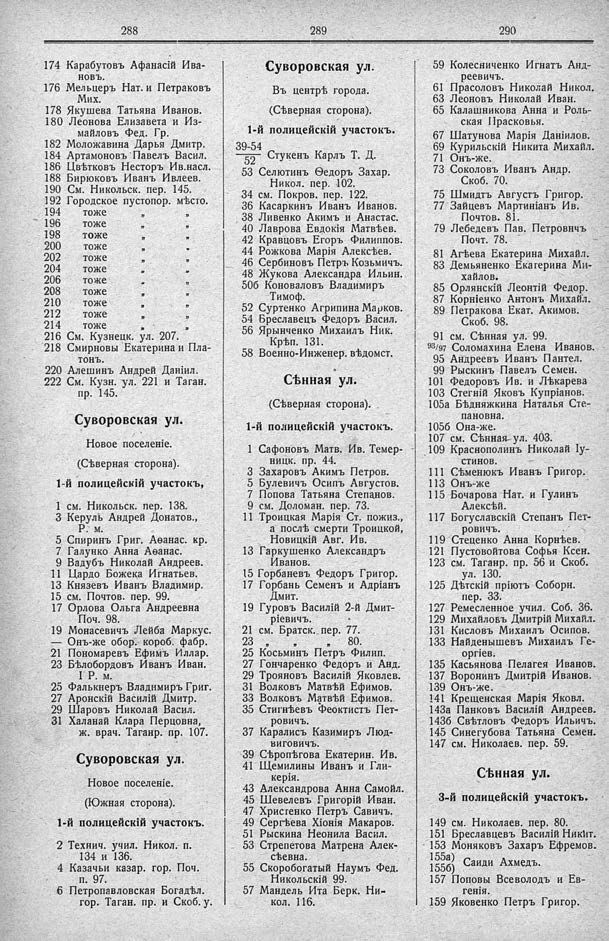

Лист источника 228
Скан

Распознанный текст
288
174 Карабутовъ Афанасій Ива-
новъ.
176 Мельцеръ Нат. и Петраковъ
Мих.
178 Якушева Татьяна Иванов.
180 Леонова Елизавета и Из-
майловъ Фед. Гр.
182 Моложавина Дарья Дмитр.
184 Артамоновъ Павелъ Васил.
186 Цвѣтковъ Несторъ Ив. насл.
188 Бирюковъ Иванъ Ивлеев.
190 См. Никольск. пер. 145.
192 Городское пустопор. мѣсто.
194 тоже " "
196 тоже " "
198 тоже " "
200 тоже " "
202 тоже " "
204 тоже " "
206 тоже " "
208 тоже " "
210 тоже " "
212 тоже " "
214 тоже " "
216 См. Кузнецк. ул. 207.
218 Смирновы Екатерина и Пла-
тонъ.
220 Алешинъ Андрей Даніил.
222 См. Кузн. ул. 221 и Таган.
пр. 145.
Суворовская ул.
Новое поселеніе.
(Сѣверная сторона).
1-й полицейскій участокъ,
1 см. Никольск. пер. 138.
3 Керуль Андрей Донатов.,
Р. м.
5 Спиринъ Григ. Аѳанас. кр.
7 Галунко Анна Аѳанас.
9 Вадубъ Николай Андреев.
11 Цардо Божека Игнатьев.
13 Князевъ Иванъ Владимир.
15 см. Почтов. пер. 99.
17 Орлова Ольга Андреевна
Поч. 98.
19 Монасевичъ Лейба Маркус.
— Онъ-же обор. короб. фабр.
21 Пономаревъ Ефимъ Иллар.
23 Бѣлобордовъ Иванъ Иван.
І Р. м.
25 Фалькнеръ Владимиръ Григ.
27 Аронскій Василій Дмитр.
29 Шаровъ Николай Васил.
31 Халанай Клара Перцовна,
ж. врач. Таганр. пр. 107.
Суворовская ул.
Новое поселеніе.
(Южная сторона).
1-й полицейскій участокъ.
2 Технич. учил. Никол. п.
134 и 136.
4 Казачьи казар. гор. Поч.
п. 97.
6 Петропавловская Богодѣл.
гор. Таган. пр. и Скоб. у.
289
Суворовская ул.
Въ центрѣ города.
(Сѣверная сторона).
1-й полицейскій участокъ.
39-54
–––– Стукенъ Карлъ Т. Д.
52
53 Селютинъ Ѳедоръ Захар.
Никол. пер. 102.
34 см. Покров. пер. 122.
36 Касаркинъ Иванъ Иванов.
38 Ливенко Акимъ и Анастас.
40 Лаврова Евдокія Матвѣев.
42 Кравцовъ Егоръ Филиппов.
44 Рожкова Марія Алексѣев.
46 Сербиновъ Петръ Козьмичъ.
48 Жукова Александра Ильин.
50б Коноваловъ Владимиръ
Тимоф.
52 Суртенко Агрипина Марков.
54 Бреславецъ Федоръ Васил.
56 Ярынченко Михаилъ Ник.
Крѣп. 131.
58 Военно-Инженер. вѣдомст.
Сѣнная ул.
(Сѣверная сторона).
1-й полицейскій участокъ.
1 Сафоновъ Матв. Ив. Темер-
ницк. пр. 44.
3 Захаровъ Акимъ Петров.
5 Булевичъ Осипъ Августов.
7 Попова Татьяна Степанов.
9 см. Доломан. пер. 73.
11 Троицкая Марія Ст. пожиз.,
а послѣ смерти Троицкой,
Новицкій Авг. Ив.
13 Гаркушенко Александръ
Иванов.
15 Горбаневъ Федоръ Григор.
17 Горбань Семенъ и Адріанъ
Дмит.
19 Гуровъ Василій 2-й Дмит-
ріевичъ.
21 см. Братск. пер. 77.
23 " " 80.
25 Косьминъ Петръ Филип.
27 Гончаренко Федоръ и Анд.
29 Трояновъ Василій Яковлев.
31 Волковъ Матвѣй Ефимов.
33 Волковъ Матвѣй Ефимов.
35 Стигнѣевъ Феоктистъ Пет-
ровичъ.
37 Каралисъ Казимиръ Люд-
виговичъ.
39 Сѣропѣгова Екатерин. Ив.
41 Щемилины Иванъ и Гли-
керія.
43 Александрова Анна Самойл.
45 Шевелевъ Григорій Иван.
47 Христенко Петръ Савичъ.
49 Сергѣева Хіонія Макаров.
51 Рыскина Неонила Васил.
53 Стрепетова Матрена Алек-
сѣевна.
55 Скоробогатый Наумъ Фед.
Никольскій 99.
57 Мандель Ита Берк. Ни-
кол. 116.
290
59 Колесниченко Игнатъ Анд-
реевичъ.
61 Прасоловъ Николай Никол.
63 Леоновъ Николай Иван.
65 Калашникова Анна и Роль-
ская Прасковья.
67 Шатунова Марія Даніилов.
69 Курильскій Никита Михайл.
71 Онъ-же.
73 Соколовъ Иванъ Андр.
Скоб. 70.
75 Шмидтъ Августъ Григор.
77 Зайцевъ Мартиніанъ Ив.
Почтов. 81.
79 Лебедевъ Пав. Петровичъ
Почт. 78.
81 Агѣева Екатерина Михайл.
83 Демьяненко Екатерина Ми-
хайлов.
85 Орлянскій Леонтій Федор.
87 Корніенко Антонъ Михайл.
89 Петракова Екат. Акимов.
Скоб. 98.
91 см. Сѣнная ул. 99.
93/97 Соломахина Елена Иванов.
95 Андреевъ Иванъ Пантел.
99 Рыскинъ Павелъ Семен.
101 Федоровъ Ив. и Лѣкарева
103 Стегній Яковъ Купріанов.
105а Бѣдняжкина Наталья Сте-
пановна.
105б Она-же.
107 см. Сѣнная ул. 403.
109 Краснополинъ Николай Іу-
стинов.
111 Сѣменюкъ Иванъ Григор.
113 Онъ-же
115 Бочарова Нат. и Гулинъ
Алексѣй.
117 Богуславскій Степанъ Пет-
ровичъ.
119 Стеценко Анна Корнѣев.
121 Пустовойтова Софья Ксен.
123 см. Таганр. пр. 56 и Скоб.
ул. 130.
125 Дѣтскій пріютъ Соборн.
пер. 33.
127 Ремесленное учил. Соб. 36.
129 Михайловъ Дмитрій Михайл.
131 Кисловъ Михаилъ Осипов.
133 Найденышевъ Михаилъ Ге-
оргіев.
135 Касьянова Пелагея Иванов.
137 Воронинъ Дмитрій Иванов.
139 Онъ-же.
141 Крещенская Марія Яковл.
143а Панковъ Василій Андреев.
143б Свѣтловъ Федоръ Ильичъ.
145 Синегубова Татьяна Семен.
147 см. Николаев. пер. 59.
Сѣнная ул.
3-й полицейскій участокъ.
149 см. Николаев. пер. 80.
151 Бреславцевъ Василій Никит.
153 Моняковъ Захаръ Ефремов.
155а) Саиди Ахмедъ.
155б)
157 Поповы Всеволодъ и Ев-
генія.
159 Яковенко Петръ Григор.